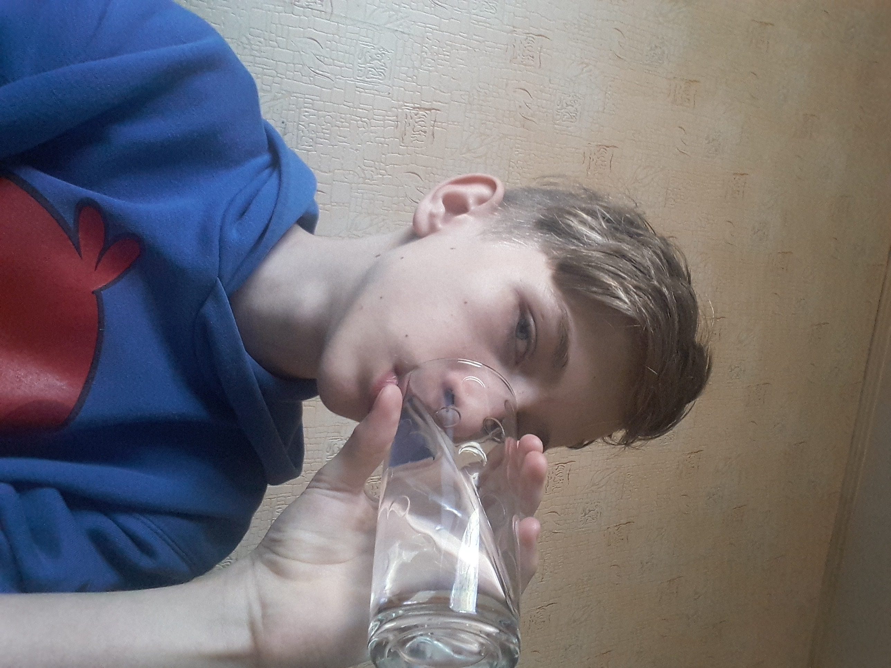
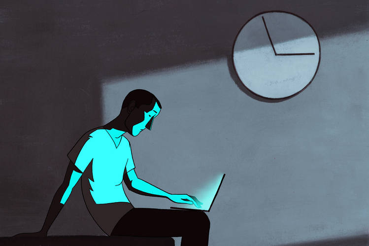

ПРАВИЛО №1
СОБЛЮДЕНИЕ ПИТЬЕВОГО РЕЖИМА
Сколько воды необходимо выпивать в сутки?
ОТВЕТ: от 2 до 2,5 литров
Как правильно пить воду?
ОТВЕТ: небольшими глотками на протяжении всего дня
К чему может призвести недостаток воды?
ОТВЕТ: плохое самочуствие, тошнота, сонливость

Прогноз соблюдения питьевого режима в разных социальных образованиях
|
Социальное образование |
Приблизительное количество людей |
Приблизительный обьём води (в литрах) |
|
Ваша семья |
3 |
7 |
|
Жители вашего дома |
780 |
1768 |
|
Жители Кривого Рога |
3179008 |
7205751 |
|
Жители Украины |
41 902 400 |
68 091 400 |
|
Все люди планеты Земля |
7 530 000 000 |
12 236 250 000 |
ПРАВИЛО №2
Калькулятор ежедневной нормы калорий
Калькулятор ежедневной нормы калорий
Формула Миффлина-Сан Жеора – это одна из самых последних формул расчета калорий для оптимального похудения или сохранения нормального веса. Она была выведена в 2005 году и все чаще стала заменять классическую формулу Харриса-Бенедикта.
Формула Миффлина-Сан Жеора, разработанная группой американских врачей-диетологов под руководством докторов Миффлина и Сан Жеора, существует в двух вариантах – упрощенном и доработанном и выдает необходимое количество килокалорий (ккал) в сутки для каждого конкретного человека.
1. Упрощенный вариант формулы Миффлина-Сан Жеора:
- для мужчин: 10 х вес (кг) + 6,25 x рост (см) – 5 х возраст (г) + 5;
- для женщин: 10 x вес (кг) + 6,25 x рост (см) – 5 x возраст (г) – 161.
2. Доработанный вариант формулы Миффлина-Сан Жеора, в отличие от упрощенного дает более точную информацию и учитывает степень физической активности человека:
- для мужчин: (10 x вес (кг) + 6.25 x рост (см) – 5 x возраст (г) + 5) x A;
- для женщин: (10 x вес (кг) + 6.25 x рост (см) – 5 x возраст (г) – 161) x A.
A – это уровень активности человека, его различают обычно по пяти степеням физических нагрузок в сутки:
- Минимальная активность: A = 1,2.
- Слабая активность: A = 1,375.
- Средняя активность: A = 1,55.
- Высокая активность: A = 1,725.
- Экстра-активность: A = 1,9 (под эту категорию обычно подпадают люди, занимающиеся, например, тяжелой атлетикой, или другими силовыми видами спорта с ежедневными тренировками, а также те, кто выполняет тяжелую физическую работу).
Калькулятор для мужчин
Калькулятор для Женщин
ПРАВИЛО №3
СОБЛЮДЕНИЕ ЗДОРОВОГО ОБРАЗА ЖИЗНИ
Зачем необходимо делать зарядку ?
Ответ: Утренняя зарядка не только взбодрит тело с утра, но и придаст бодрости организму на целый день, увеличит поступление кислорода в организм и тем самым увеличит работоспособность мозга
К каким последствиям может привести отсутствие
физических упражнений ?
Ответ: Вялость, лишний вес.
Как смотивировать себя делать зарядку ?
Ответ: Вариантов много. Главное чтобы вы этого хотели
КАК Я ВЫПОЛНЯЮ ЗАРЯДКУ
ПРАВИЛО №4
СОБЛЮДЕНИЕ РЕЖИМА СНА
1. Здоровый сон
Специалисты организации Nemours, которая занимается здоровьем детей,
считают, что подростки должны спать около девяти часов в сутки
Тинейджеры редко столько лежат в кровати.
Как сон влияет на подростковое здоровье?
* Помогает подростку полноценно расти и развиваться;
* Напрямую влияет на внимательность и успехи в школе;
* Помогает добиваться успехов в спорте;
Нарушения сна приводят к многочисленным сложностям со здоровьем
лишний вес и проблемы с сердцем, нарушения иммунитета
и эмоциональные проблемы
У подростков сбиваются биологические часы
В подростковом возрасте режим сна заметно отличается от детского или
взрослого. В этот период «сбрасывается» циркадный ритм (или
биологические часы), из-за чего тинейджеры засыпают и просыпаются
позже. Считается, что это связано с мелатонином — гормоном, который
регулирует наши биологические часы.У подростков он вырабатывается
позже, чем у маленьких детей или взрослых, что приводит к тому, что
ребёнок не хочет спать по вечерам.

2.Мешают стресс и гаджеты
Есть и ещё одна причина нарушения сна — стресс. В подростковом возрасте
у ребёнка больше обязанностей: ЕГЭ, репетиторы, грядущее поступление,
половое созревание. Мозг постоянно возбуждён.
Также достаточно распространённая причина нарушения сна — привычка
ложиться спать с телефоном или планшетом. Большое количество
информации не даёт мозгу успокоиться, поэтому подростку тяжело заснуть
К слову, такой же эффект вызывают поздние раунды в Fortnite или «Доту».
Как помочь подростку высыпаться?
Вот советы, которые помогают выровнять режим сна
* Ложиться спать и просыпаться в одно и то же время, даже в выходные;
* Больше физической активности, но, главное, не перед сном (нужно около
трёх часов, чтобы организм успокоился);
* Пить меньше кофе, чая и энергетиков;
* Перестать пользоваться электроникой хотя бы за час до сна;
* Зажигать в комнате подростка ночник и проветривать по вечерам
3.Последствия недосыпа
ЕСЛИ подростки не получают положенных 3-10 часов сна каждую ночь, они могут столкнуться со многими неприятными
последствиями, такими как
* Депрессия. Согласно исследованиям, молодые люди, которые ложатся позже, более склонны к развитию депрессии и мыслям
о самоубийстве. В мозгу, похоже, существует связь между сном и депрессией.
* Плохие оценки. У подростков, которые не высыпаются, обычно появляются проблемы с памятью и школьной успеваемостью.
* Поведение. От нехватки сна может снижаться внимание, как результат — гиперактивность и новые скандалы
* Дорожно-транспортные происшествия. У сонного подростка, как правило, замедленная реакция, поэтому он рискует стать
участником ДТП
Сколько нужно спать людям в разном возрасте, чтобы быть здоровыми:
* Новорожденные (до 3 месяцев) — 14-1 7 часов
* Дети (4— 77 месяцев) — 1 2-1 5 часов
* Дети (от‘! года до 2 лет) — 11-14 часов
* Дошкольники (3-5 лет) — 1 0-1 3 часов
* Школьники (от 6 до 73 лет) — 9-11 часов
* Подростки (14- т 7лет) — 8-10 часов
* Взрослые (78лет - 64 года) — 7-9 часов
* Пожилые люди старше 65 лет — 7-8 часов
|
Член семьи |
Возраст |
Ложится спать |
Встает |
Всего спит |
Должен спать |
Вывод |
| Я | 15 | 23.00 | 7.00 | 8 | 8-10 | Все в норме |
| Мама | 43 | 21.00 | 6.00 | 9 | 7-9 | Все в норме |
| Папа | 52 | 22.00 | 7.00 | 9 | 7-9 | Все в норме |
Этический вывод:
1. Каждый человек должен нести индивидуальную ответственность перед семьей
и обществом за свое здоровье. путем соблюдения здорового образа жизни, в
том числе и режима сна
2. Проживая в сообществе других людей, каждый из нас обязан заботиться о
здоровье ближних и стараться поддерживать Других в соблюдении режима.
3. При наличии в семье людей с различными хронотипами мы должны уважать их
возможности и потребности. и если человек лег спать - необходимо
поддерживать все условия, необходимые для его полноценного сна: тишину,
тепло, темноту вокруг.
ПРАВИЛО №5

Что такое хронотип?
Хронотип - это характер организации суточных (циркадных) биоритмов человека.
Хронотип отражает суточную динамику функциональной активности различных органов
и систем организма (время пробуждения и засыпания, работоспособность, 24-часовой
ритм артериального давления и др).
В ЗЭВИОИМОСТИ ОТ ЭПИВНОСТИ человека В ТО ИЛИ ИНОЕ время СУТОК ВЫДЕЛЯЮТ 3
хронотипа:
«жаворонки». утренний тип;
«голуби» - дневной тип;
«совы» - вечерний тип;
Психофизиологические различия утреннего и вечернего типа
|
Параметр |
"Жаворонок" |
"Сова" |
|
Время пробуждения |
4.00-6.00 |
8.00-10.00 |
|
Время засыпания |
20.00-22.00 |
24.00-2.00 |
|
Пик активности |
8.00-10.00 |
После 16.00 |
|
Доминируещее полушарие головного мозга |
Левое |
Правое |
|
Творчиская активность,воображение |
Меньше |
Больше |
|
Характер мышления |
Абстрак'гно- логическое, аналитическое |
Конкретно-предметное,холистическое |

ПРАВИЛО №6
Метод помидора
Всего 5 простых шагов:
1. Определите ичетко сформулируйте задачу.
Очень важно понимать, что и зачем вы собираетесь делать следующие 25 минут
2. Заведите таймер на 25 минут.
Почему 25? Согласно исследованиям психологов, человек может концентрироваться
на чем-то максимум 50 минут. 25 минут — это один «помидор». Один помидор
беспрерывной работы
3. Приступайте к работе, пока не зазвонит таймер.
Дайте себе слово, не отвлекаться от задачи все 25 минут, Ни на звонки, ни на
сообщения или письма, ни на коллег. Только работа над поставленной задачей
4. Сделайте перерыв на 5 минут.
Можно ответить на пропущенные звонки и письма, а лучше встать и размяться.
5. После 4 помидоров сделайте большой перерыв.
ПРАВИЛО №7
Эффективное планирование
Наверняка с вами бывает так, что в конце тяжелого дня вы чувствуете себя опустошенным не из-за того, что устали, а потому что не достигли ни одной существенной цели. у каждого из нас имеются оправдания этому: бесконечные встречи, частые отвлечения, срочные дела. Но результат один и тот же — вы не ‘успели сделать ничего из того, что заранее запланировали. Так как же научиться планировать свои дела так, чтобы у вас оставалось время на все - важные задачи, семью, развлечения?
Важность планирования
Если вы планируете эффективно и с умом, то это умение позволяет вам:
* Понимать, за какое время реально достичь определенной цели.
х Убеждаться, что у вас есть достаточно времени для выполнения самых важных
задач.
* Планировать время на случай непредвиденных обстоятельств.
х Избегать брать на себя такое количество дел, которые вы не сможете
ВЫПОЛНИТЬ.
br
* Упорно работать над своими личными и карьерными целями.
* Иметь достаточно времени на семью, друзей, саморазвитие и хобби.
Достигать баланса в жизни.
Время нельзя купить или замедлить, зато его можно потратить впустую и сожалеть
о прошлом. Планирование помогает получать удовольствие от настоящего и
стремиться преуспеть в будущем.
Мой список дел
Добавить- Взять книгу по русскому языку
- Взять концелярию
- Взять книгу по информатике
- Сделать домашнее задание
ПРАВИЛО №8
ГИМНАСТИКА ДЛЯ МОЗГА – ТРЕНИРУЕМ УМ
Мы привыкли, что можно тренировать тело – выполнять физические упражнения, ходить в тренажерный зал или хотя бы делать зарядку по утрам. Но давно доказано, что мозг тоже поддается тренировке. Что самое интересное, тренировать его можно не только на ментальном уровне, но и на физическом, выполняя специальные упражнения. Звучит фантастически? Возможно, но этому есть вполне реальное объяснение.
ТРЕНИРОВКА МОЗГА – ПРАВДА ИЛИ МИФ?
В ходе многочисленных исследований нейрофизиологам удалось установить, что определенные движения тела влияют на состояние мозга. Следовательно, если выполнять специально подобранные упражнения, мозг можно развивать. И в этом нет ничего удивительного, ведь организм человека – это целостная система, в которой тело и ум тесно взаимосвязаны.
Американские исследователи Гейл и Пойл Деннисон пошли дальше своих коллег и разработали целую программу интеллектуального развития – нейрогимнастику, то есть гимнастику для мозга.
Нейрогимнастика – это комплекс упражнений, направленных на активацию естественных механизмов работы мозга через выполнение физических движений. Упражнения объединяют движение и мысль, то есть активизируют и задействуют связи между системами «тело» и «ум».
ПОЛОЖИТЕЛЬНЫЕ ЭФФЕКТЫ НЕЙРОГИМНАСТИКИ
* лучшее восприятие и запоминание новой информации;
* улучшение состояния нервной системы;
* развитие мелкой моторики, памяти, внимания, речи;
* раскрытие скрытых способностей мозга;
* синхронизация работы правого и левого полушарий головного мозга;
brain
Согласно подсчетам, лишь 10 % населения планеты задействуют правое «творческое» полушарие мозга наравне с левым «логическим». Но также доказано, что максимального умственного развития можно достичь только при скоординированной работе сразу 2 полушарий. Если вы хотите вырастить своего ребенка умным и самодостаточным, приложите все усилия для гармоничного развития его мозга.
КАК РАЗВИТЬ ЛЕВОЕ ПОЛУШАРИЕ
Левое полушарие отвечает за логическое и рациональное мышление и в силу нашего стиля жизни доминирует практически у всех людей, за исключением левшей. Система образования построена на развитии именно левого полушария, то есть необходимые навыки ребенок получает уже в школе. Но есть несколько способов, как ускорить этот процесс:
* ежедневно решать математические задачи разной сложности;
* тренироваться в задачках на логику и смекалку;
* разгадывать ребусы, кроссворды, шарады и т. д;
КАК РАЗВИТЬ ПРАВОЕ ПОЛУШАРИЕ
Установлено, что правое полушарие, отвечающее за творческое и образное мышление, доминирует у людей с рождения. Однако в процессе обучения происходит перекос в сторону левого полушария, которое постепенно подавляет правое. У левшей правое полушарие все равно остается доминирующим, но вот другим детям полезно развивать его специально:
* посещать творческие мероприятия (выставки, музеи, галереи и т. д.);
* сочинять стихотворения или рассказы;
* задействовать левую руку при выполнении привычных действий;
* визуализировать различные образы;
* воспроизводить в уме знакомые звуки, запахи, ощущения.
Но главное условие всестороннего развития ребенка – тренировка и налаживание связи между полушариями. Для этого и нужны нейрогимнастические упражнения. Наибольший эффект от их выполнения наблюдается у детей от 7 до 12 лет – в этом возрасте они наиболее активны и любознательны.